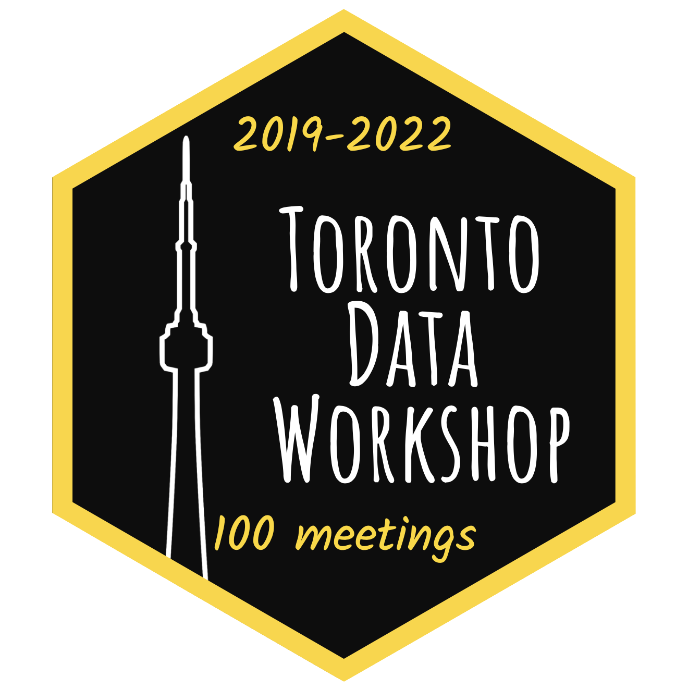
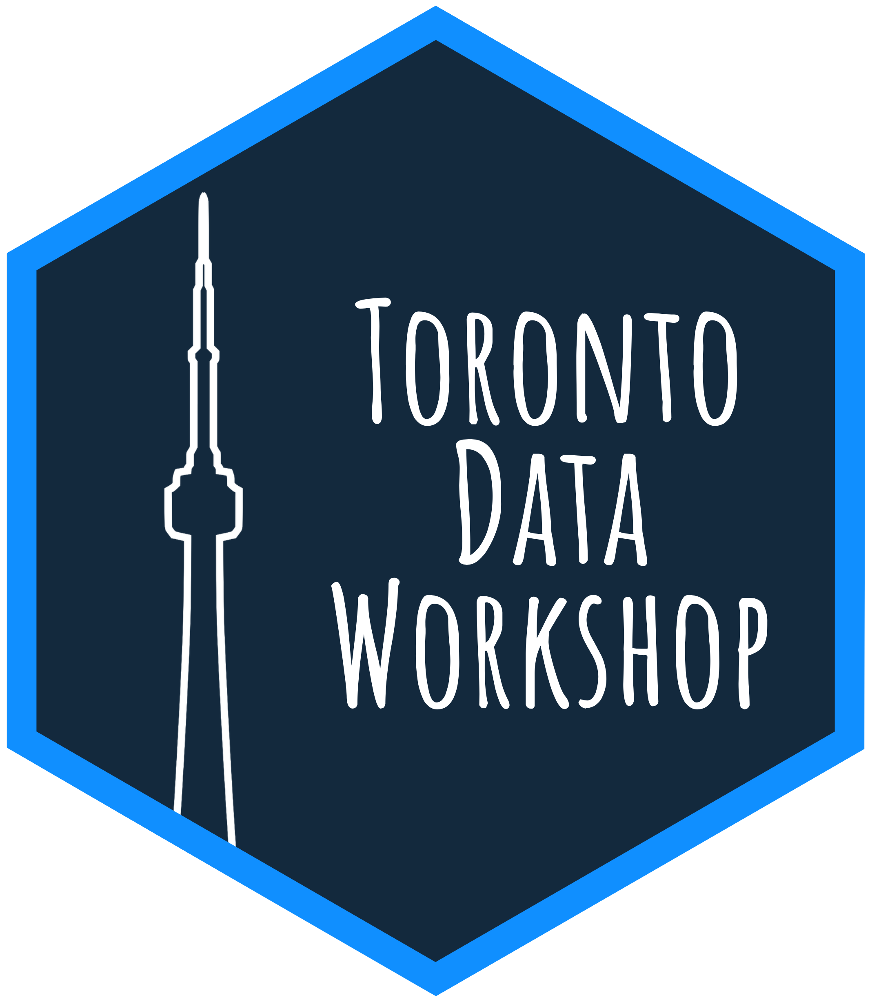
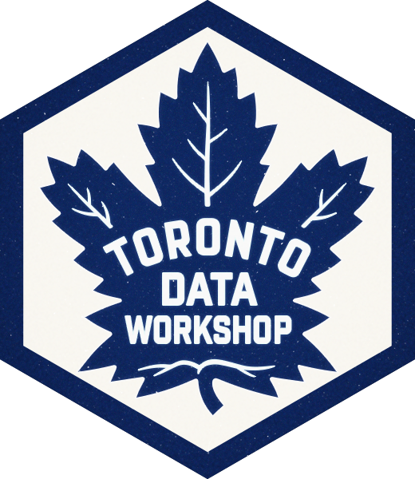
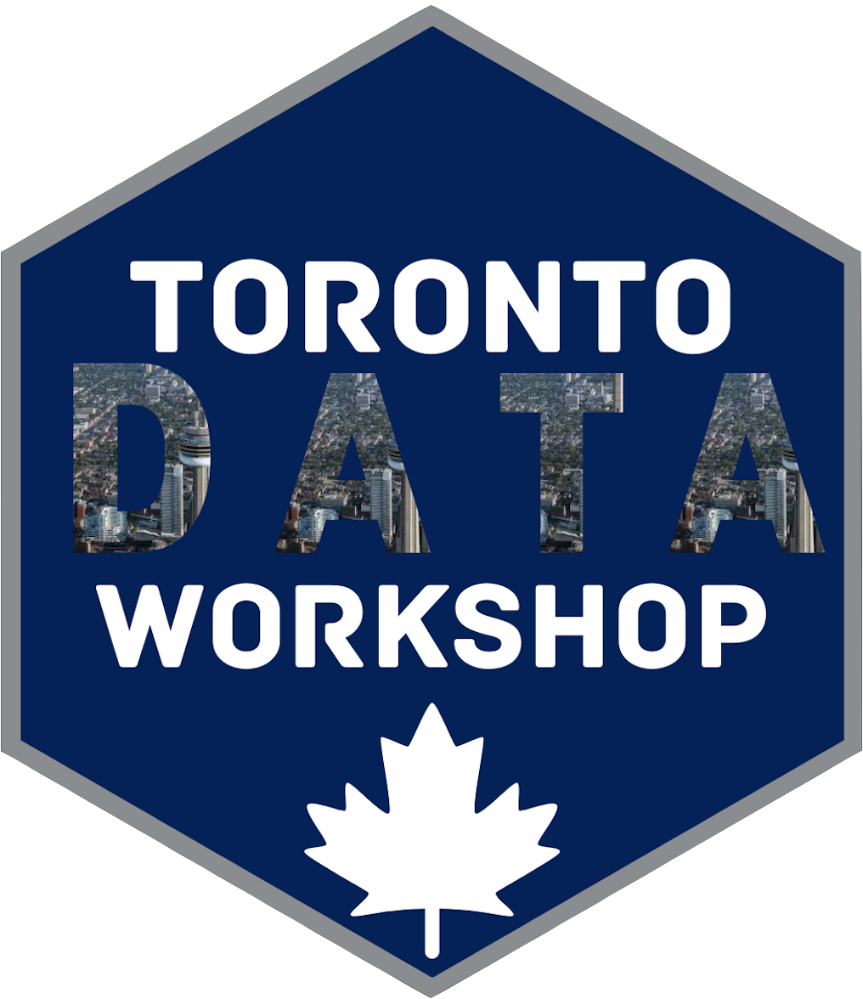
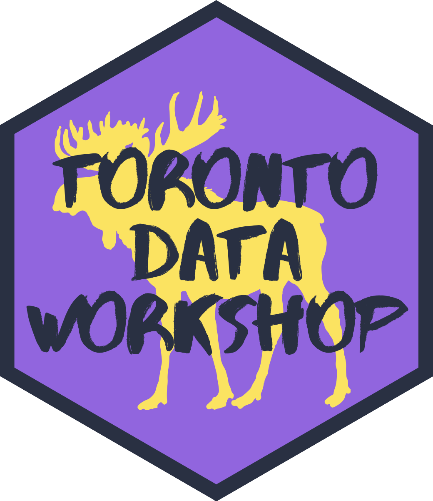

Overview
The Toronto Data Workshop (TDW) brings together academia and industry to consider, collate, share, and disseminate best practices in doing data science, especially in the data-centric steps of a data science project: collection; cleaning; storage; retrieval; dissemination; protection; and communication. We meet weekly for an hour and aim to have a roughly even split of participants from academia and industry over the course of each term. For an invitation please sign up here. Anyone is welcome to attend - you don’t need to be affiliated with the university.
Current organizing committee:
- Kelly Lyons,
- Michaela Drouillard,
- Rohan Alexander.
Past committee members:
- Amy Farrow (2021-22)
- Faria Khandaker (2020-21)
- Lorena Almaraz De La Garza (2021-22)
The TDW is a joint initiative between the Faculty of Information and the Department of Statistical Sciences at the University of Toronto and we especially thank Dean Wendy Duff and Chair Radu Craiu for their support.
Current schedule
Fall 2022

| Date | Speaker | Recording |
|---|---|---|
| Fri 9 Sep 2022, noon - 1pm | Ryan Briggs, University of Guelph | https://youtu.be/dyLtxZM89iE |
| Thu 22 Sep 2022, 5pm - 6pm | Melina Vidoni, Australian National University | - |
| Fri 30 Sep 2022, 1pm - 2pm | Emily Giambalvo and Ence Morse, The Washington Post | - |
| Fri 7 Oct 2022, noon - 1pm | Rohan Alexander, University of Toronto | https://youtu.be/omvXLYpcKEY |
| Fri 14 Oct 2022, noon - 1pm | April Wang, University of Michigan | https://youtu.be/SD1Ofp0F5is |
| Fri 21 Oct 2022, noon - 1pm | Meg Risdal, Kaggle (Google) | - |
| Fri 4 Nov 2022, noon - 1pm | Meggie Debnath and Maitreyee Sidhaye, St. Michael’s Hospital, Unity Health Toronto | https://youtu.be/ltA_vOwrIWc |
| Fri 18 Nov 2022, noon - 1pm | Lindsay Katz, University of Toronto | https://youtu.be/lYOdCNJOusg |
| Fri 25 Nov 2022, noon - 1pm | Marcel Fortin and Leanne Trimble U of T Map & Data Library | https://youtu.be/_Ec40JPOxcA |
| Fri 16 Dec 2022, noon - 1pm | Zane Schwartz, Investigative Journalism Foundation |
- Friday 9 September 2022, noon - 1pm
Ryan Briggs, University of Guelph
Statistical power in political science
Ryan Briggs is a social scientist at the University of Guelph - Thursday 22 September 2022, 5pm - 6pm
Melina Vidoni, Australian National University
Dr Vidoni is a Lecturer at the Australian National University in the CECS School of Computing, where she continues her domestic and international collaborations with Canada and Germany. Dr Vidoni’s main research interests are mining software repositories, technical debt, software development, and empirical software engineering when applied to data science and scientific software.
- Friday 30 September 2022, noon - 1pm
Emily Giambalvo and Ence Morse, The Washington Post
How the NFL blocks Black coaches
Emily Giambalvo covers University of Maryland athletics for The Washington Post, where she has worked since June 2018. Emily grew up in South Carolina and graduated from the University of Georgia.
Clara Ence Morse is an Investigative Reporting Workshop intern with The Washington Post’s data desk. She is a student at Columbia University and the editor in chief of the Columbia Daily Spectator.
- Friday 7 October 2022, noon - 1pm
Rohan Alexander, University of Toronto
Rethinking data science - Friday 14 October 2022, noon - 1pm
April Wang, University of Michigan
Reimagining Tools for Collaborative Data Science
April Wang is a Ph.D. candidate at University of Michigan School of Information, advised by Dr. Steve Oney and Dr. Christopher Brooks. Her research in human-computer interaction (HCI) explores barriers in real-world data science programming practices, and reimagines the workflow and interfaces for collaborative data science environments.
- Friday 21 October 2022, noon - 1pm
Meg Risdal, Kaggle (Google)
Meg Risdal is a lead Product Manager for Kaggle (a Google company) where she works with software developers, designers, and researchers to create great experiences for people learning ML, ML practitioners, and ML researchers.
- Friday 4 November 2022, noon - 1pm
Maitreyee Sidhaye and Meggie Debnath, St. Michael’s Hospital, Unity Health Toronto
The Things We Learned from Deploying AI in Healthcare
Maitreyee and Meggie are data scientists in the Data Science & Advanced Analytics (DSAA) unit at St. Michael’s Hospital in Toronto. DSAA is a multiteam unit in the hospital that provides data sciecne and machine learning solutions across a variety of problems: clinical prediction tools, staffing optimization, imaging, and more. DSAA works very closely with others in the hospital to collaborate on understanding problems and providing solutions. Maitreyee and Meggie will share their experiences and learnings from building and deploying machine learning tools in the hospital.
- Friday 18 November 2022, noon - 1pm
Lindsay Katz, University of Toronto
A new, comprehensive database of all proceedings of the Australian Parliamentary Debates
Lindsay Katz holds a Masters of Statistics from the University of Toronto and a Bachelor of Arts and Science from the University of Guelph where she specialized in Mathematical Science and International Development. At Guelph she worked with Professor Ryan Briggs to explore lived poverty in Africa using Afrobarometer data. At Toronto she works with Professor Monica Alexander to research demographic variation in short-term migration patterns using Facebook data, and with Professor Rohan Alexander to digitize the Australian parliamentary debates from 1901 to present. As an interdisciplinary researcher, she is interested in using statistics to better understand social processes in the world. - Friday 25 November 2022, noon - 1pm
Marcel Fortin and Leanne Trimble, U of T Map & Data Library
The Map and Data Library’s data collections, software & support, with a focus on recently acquired datasets.
Leanne Trimble is a Data & Statistics Librarian, and Marcel Fortin is Head, Map and Data Library. - Friday 16 December 2022, noon - 1pm
Zane Schwartz, Investigative Journalism Foundation
Zane Schwartz is the editor-in-chief of the Investigative Journalism Foundation.
Past schedules
Winter 2022

| Date | Speaker | Recording |
|---|---|---|
| Fri 28 Jan 2022, noon - 1pm | Ashok Chaurasia, University of Waterloo | https://youtu.be/qFCHjNH9HLc |
| Fri 4 Feb 2022, noon - 1pm | Nick Huntington-Klein, Seattle University | https://youtu.be/dOJvE3C2KrY |
| Fri 11 Feb 2022, noon - 1pm | Silvia Canelón, University of Pennsylvania | https://youtu.be/4M8Op1oCN5U |
| Fri 18 Feb 2022, noon - 1pm | Vincent Arel-Bundock, Université de Montréal | https://youtu.be/zrBhtXwZnB8 |
| Fri 25 Feb 2022, noon - 1pm | Toronto Workshop on Reproducibility | |
| Fri 4 Mar 2022, noon - 1pm | Maria Kamenetsky, University of Wisconsin-Madison | https://youtu.be/cjpoa59-obU |
| Fri 11 Mar 2022, noon - 1pm | Irena Papst, McMaster University | https://youtu.be/Oxk5Dulhnpw |
| Fri 18 Mar 2022, noon - 1pm | May Chan and Ramses Van Zon, U of T Libraries and SciNet, respectively. | https://youtu.be/92vir6ZX1mg |
| Thu 24 Mar 2022, 5pm - 6pm | Emi Tanaka, Monash University | https://youtu.be/sFdZb89Th9g |
| Fri 1 Apr 2022, noon - 1pm | Brittany Witham, Geopolitica | https://youtu.be/x7ldixTA1aE |
- Fri 28 Jan 2022, noon - 1pm,
Ashok Chaurasia, University of Waterloo, ‘Multiple Imputation: Old and New Combining Rules for Statistical Inference’
Dr. Ashok Chaurasia is an Assistant Professor (of Statistics) in the School of Public Health Sciences at University of Waterloo. His background/training is in Statistics, with research interests in topics of Missing Data, Data Imputation, Model Selection, and Longitudinal Data Analysis Methodology. - Fri 4 Feb 2022, noon - 1pm,
Nick Huntington-Klein, Seattle University
I am an economics professor at Seattle University, with research that focuses on higher education, econometrics, and metascience. - Fri 11 Feb 2022, noon - 1pm,
Silvia Canelón, University of Pennsylvania, ‘Topic: Lessons Learned from EHR Research’
Silvia Canelón is a postdoctoral research scientist in the Department of Biostatistics, Epidemiology, and Informatics at the University of Pennsylvania where she applies biomedical informatics to population health research. She uses R to work on projects that develop novel data mining methods to extract pregnancy-related information from Electronic Health Records (EHR) and that study the relationship between environment and disease. - Fri 18 Feb 2022, noon - 1pm,
Vincent Arel-Bundock, Université de Montréal, ‘What
modelsummarytaught me about R package development’
I am a political science professor at the Université de Montréal. - Fri 25 Feb 2022, noon - 1pm,
Reading week break
- Fri 4 Mar 2022, noon - 1pm,
Maria Kamenetsky, University of Wisconsin-Madison, ‘Spatial clustering’
I am a PhD candidate in Epidemiology at the University of Wisconsin-Madison, where I also completed my MS in Statistics. My research focuses on methods in spatial epidemiology, specifically working on statistical methods and applications in spatial cluster detection. - Fri 11 Mar 2022, noon - 1pm,
Irena Papst, McMaster University, ‘Some or all of: COVID-19 data, modelling, experiences using models to help guide pandemic response’
I’m a postdoctoral fellow in McMaster’s Mathematics & Statistics department, where I work on mathematical modelling, especially of infectious disease dynamics. I did my PhD in Cornell’s Center for Applied Mathematics. I care deeply about reproducible research, clear scientific communication, good teaching, and big salads. - Fri 18 Mar 2022, noon - 1pm,
May Chan and Ramses Van Zon
- Thu 24 Mar 2022, 5pm - 6pm,
Emi Tanaka, Monash University, ‘An anthology of experimental designs’
Dr. Emi Tanaka is an assistant professor in statistics at Monash University whose primary interest is to develop impactful statistical methods and tools that can readily be used by practitioners. Her research area include data visualisation, mixed models and experimental designs, motivated primarily by problems in bioinformatics and agricultural sciences. She is currently the President of the Statistical Society of Australia Victorian Branch and the recipient of the Distinguished Presenter’s Award from the Statistical Society of Australia for her delivery of a wide-range of R workshops. - Fri 1 Apr 2022, noon - 1pm,
Brittany Witham, Geopolitica, ‘Data science at a startup’
Originally from Melbourne, Australia, Brittany received her B.A. in International Studies from the University of Saskatchewan and started her career in economic development, equipping her with comprehensive knowledge of foreign direct investment and international business early in her career. She went on to obtain an M.A. in European and Russian Affairs from the University of Toronto in 2018, where she first discovered the potential of programming for political science and became fascinated with artificial intelligence (AI). Over the past three years, Brittany has worked in many facets of the AI industry, from leading research and development of new AI products for video game developers to building automated data pipelines for business intelligence and managing software engineering and client engagement teams. In that time, she has honed technical skills in full-stack development, machine learning, and data engineering. She recently struck out on her own to launch an online global event monitoring tool and deliver novel solutions to clients in the political risk and social enterprise sectors. Brittany is a firm believer in the potential for data-driven technologies for geopolitics and is excited to contribute to the many discoveries to be made in this space.
Fall 2021
This term is mostly a special series of talks featuring University of Toronto speakers on the relationship between data science and their other field of expertise.
| Date | Speaker | Recording |
|---|---|---|
| Fri 24 Sep 2021, noon - 1pm | Karen Chapple, Geography, planning, cities | https://youtu.be/rNRwOStrb9o |
| Fri 1 Oct 2021, noon - 1pm | Special on 2021 Canadian Election | https://youtu.be/pCwJXgR7V5k |
| Fri 8 Oct 2021, noon - 1pm | Fedor Dokshin, Sociology | https://youtu.be/QjTsDbH6MxM |
| Fri 15 Oct 2021, noon - 1pm | Drew Stommes, Yale University | - |
| Fri 22 Oct 2021, noon - 1pm | Tegan Maharaj, Information | https://youtu.be/SP3bZ3uHyTg |
| Fri 29 Oct 2021, noon - 1pm | Josh Speagle, Astronomy | https://youtu.be/fHk3Fy1TxQY |
| Fri 5 Nov 2021, noon - 1pm | Yun William Yu, Math | https://youtu.be/-1jpjM2nP2Y |
| Fri 12 Nov 2021, noon - 1pm | Ann Glusker, Berkeley | https://youtu.be/139xCz-e0tg |
| Fri 19 Nov 2021, noon - 1pm | Radu Craiu, Statistical Sciences | https://youtu.be/B7EKLFotknU |
| Fri 26 Nov 2021, noon - 1pm | Kieran Campbell, Biomedicine | https://youtu.be/PuQhyGj3G3o |
| Fri 3 Dec 2021, noon - 1pm | Leanne Trimble, Libraries | https://youtu.be/rxnShSHwBXU |
| Fri 10 Dec 2021, noon - 1pm | Nathan Taback, Teaching | https://youtu.be/99pOuO_TD5w |
- Friday, 24 September 2021, noon - 1pm
Karen Chapple, Department of Geography and Planning/School of Cities
Karen Chapple is the inaugural Director of the School of Cities and Professor of Geography and Planning at the University of Toronto. Her research uses data science methods to identify and predict gentrification and displacement in cities. She is Professor Emerita at the University of California, Berkeley, where she helped to launch the undergraduate data science program. - Friday, 1 October 2021, noon - 1pm
Special meeting on 2021 Canadian Election
Discussion and presentations by:- Professor David Andrews on elections forecasting.
- Professor Daniel Rubenson on the Canadian Election Study.
- Johnson Vo on his model of the 2021 election.
- Eric Zhu, Brian Diep, Ashely (Jing Yuan) Zhang, Kristin (Xi Yu Huang), and Tanvir Hyder on their model of the 2021 election.
- Friday, 8 October 2021, noon - 1pm
Fedor Dokshin, Department of Sociology
Fedor Dokshin is an Assistant Professor of Sociology at the University of Toronto. He is a computational social scientist with research interests in social networks, organizations, and energy and the environment. Across these domains, Fedor leverages data science methods and novel data sources to improve existing measurement strategies.
- Friday, 15 October 2021, noon - 1pm
Drew Stommes, Department of Political Science, Yale University
Drew Stommes is a doctoral candidate in the Department of Political Science at Yale University, where he researches democracy, political violence, and quantitative methods. He will talk about a recent working paper, ‘On the reliability of published findings using the regression discontinuity design in political science’. - Friday, 22 October 2021, noon - 1pm
Tegan Maharaj, Faculty of Information
I study AI systems and “what goes into” them, e.g. their real-world deployment context, and the effects that has on learning behaviour and generalization. I do that because I want to be able to use AI systems responsibly for problems I think are important, like impact and risk assessments for climate change, AI alignment, ecological management and other common-good problems. My website is: http://www.teganmaharaj.com/.
- Friday, 29 October 2021, noon - 1pm
Josh Speagle, Astronomy & Astrophysics, Dunlap Institute, Statistical Sciences
Josh is a Banting & Dunlap Postdoctoral Fellow at the University of Toronto whose research focuses on using astrostatistics and “data science” to understand how galaxies like our own Milky Way form, behave, and evolve. - Friday, 5 November 2021, noon - 1pm
Yun William Yu, Math Department, UofT; UTSC Computer & Mathematical Sciences
Yun William Yu is an assistant professor in the math department at UofT whose research focuses on algorithmic methods for computational biology and medical informatics. - Friday, 12 November 2021, noon - 1pm
Ann Glusker, Doe Library, University of California Berkeley
Dr Ann Glusker is Librarian for Sociology, Demography, Public Policy, Psychology (fall 2021) & Quantitative Research at the Doe Library, University of California, Berkeley. She will discuss a recently released report ‘Supporting Big Data Research at the University of California, Berkeley’. This report provides insights on researcher practices and challenges in six thematic areas: data collection & processing; analysis: methods, tools, infrastructure; research outputs; collaboration; training; and balancing domain vs data science expertise.
- Friday, 19 November 2021, noon - 1pm
Radu Craiu, Statistical Sciences @ U of T
Dr. Radu V. Craiu is Professor and Chair of Statistical Sciences at the University of Toronto. His main research interests are in computational methods in statistics, especially, Markov chain Monte Carlo algorithms (MCMC), Bayesian inference, copula models, model selection procedures and statistical genetics.
- Friday, 26 November 2021, noon - 1pm
Kieran Campbell, Lunenfeld Tanenbaum Research Institute
Dr. Kieran Campbell is an investigator at the Lunenfeld-Tanenbaum Research Institute and an assistant professor at the Departments of Molecular Genetics and Statistical Sciences, University of Toronto. His research focusses on Bayesian models and machine learning for high dimensional biomedical data, including single-cell and cancer genomics. Recently, he has led efforts to develop statistical machine learning methodology to integrate single-cell RNA and DNA sequencing data to uncover the effects of tumour clonal identity on gene expression, as well as methods to automatically delineate the tumour microenvironment from single-cell RNA-sequencing data. Such findings can improve our understanding of cancer progression and of why certain tumours are resistant to therapies, leading to relapse. - Friday, 3 December 2021, noon - 1pm
Leanne Trimble, UofT Libraries
Leanne Trimble is a data librarian at the Map & Data Library, University of Toronto Libraries. - Friday, 10 December 2021, noon - 1pm
Nathan Taback, Departments of Statistical Sciences
Nathan Taback is the director of Data Science programs and an Associate Professor, Teaching Stream in the Department of Statistical Sciences, and Computer Science (cross-appointed) at the University of Toronto. He currently serves as a Special Advisor to the Dean of Arts and Science on Computational and Data Science Education.
Summer 2021

| Date | Speaker | Topic | Recording |
|---|---|---|---|
| Fri 21 May 2021, noon-1pm | David Shor, OpenLabs | Political data science. | https://youtu.be/_IEPKapa9_0 |
| Fri 28 May 2021, noon-1pm | Samantha Pierre, University of Toronto | The Effects of a Tony Award. | https://youtu.be/rFojvBN0qGk |
| Fri 4 June 2021, noon-1pm | Heather Krause, We All Count | Equity in data. | https://youtu.be/Yu_l8MpKK-E |
| Fri 11 June 2021, noon-1pm | Laura Bronner, Data scientist | Quantitative editing. | https://youtu.be/LI5m9RzJgWc |
| Fri 18 June 2021, noon-1pm | Jacob Matson, Simetric, Inc. | From data to dashboard. | https://youtu.be/U8-6QKtWXCQ |
| Fri 25 June 2021, noon-1pm | Laura Derksen, University of Toronto Mississauga (jointly hosted with the UTM Collaborative Digital Research Space.) | Effect of Wikipedia | https://youtu.be/Coz-HFesTsw |
| Fri 2 July 2021, noon-1pm | Zachary McCaw, Google | - | - |
| Fri 16 July 2021, noon-1pm | Kamilah Ebrahim, University of Toronto | Trust in contact tracing apps. | https://youtu.be/f_3bpEeRdhI |
| Fri 23 July 2021, noon-1pm | Annie Collins & Rohan Alexander, University of Toronto | Reproducibility of COVID-19 pre-prints | https://youtu.be/_ncpTbhe8qA |
| Fri 30 July 2021, noon-1pm | Keli Chiu, University of Toronto | Detecting and explaining sexist and racist text with GPT-3 | https://youtu.be/xmmoVD5zTOQ |
| Fri 6 August 2021, 12:30-1:30pm | Ijeamaka Anyene, Kaiser Permanente Division of Research | Taking the next step past standard charts. | https://youtu.be/LlVf8foXUmM |
| Fri 13 August 2021, noon-1pm | Students from the Independent Summer Statistics Community | Analysis of Toronto data | https://youtu.be/zkuMedB23f8 |
| Fri 20 August 2021, noon-1pm | Students from Vianey Leos Barajas’ research group, University of Toronto | Sharks, lizards, and basketball! | https://youtu.be/p697exbcMZE |
- Friday, 21 May 2021, Noon - 1pm
David Shor, OpenLabs,
Bio: David is an American data scientist who tries to elect Democrats. He is known for analyzing political polls and currently serves as head of data science with OpenLabs, a progressive nonprofit, and also as a Senior Fellow with the Center for American Progress Action Fund.
Topic: Political data science.
Recording: https://youtu.be/_IEPKapa9_0
- Friday, 28 May 2021, Noon - 1pm
Samantha Pierre, University of Toronto,
Bio: Samantha is a fourth-year statistics student studying at the University of Toronto. Throughout the past year she has combined her love for theatre and statistics to analyze trends in the theatre community. She volunteers as a member of PAIR-CG to create a representational framework for the international theatre community. She currently works at WOMBO, an app developed by former U of T students, as head of music content.
Topic: And The Nominees Are… An Empirical Study of the Effects of a Tony Award Win and Nomination on a Show’s Success.
Recording: https://youtu.be/rFojvBN0qGk
- Friday, 4 June 2021, Noon - 1pm
Heather Krause, We All Count,
Bio: Heather remains unconvinced. As a statistician with decades of global experience working on complex data problems and producing real-world knowledge, she has developed the Data Equity Framework to address the equity issues in data products and research projects. Her emphasis is on combining strong statistical analysis with clear and meaningful communication. She is currently working on implementing tools for equity and ethics in data. As the founder of two successful data science companies, she attacks the largest questions facing societies today, working with both civic and corporate organizations to improve outcomes and lives. Her relentless pursuit of clarity and realism in these projects pushed her beyond pure analysis to mastering the entire data ecosystem including award-winning work in data sourcing, modeling, and data storytelling, each incorporating bleeding edge theory and technologies. Heather is the founder of We All Count, a project for equity in data working with teams across the globe to embed a lens of ethics into their data products from funding to data collection to statistical analysis and algorithmic accountability. Her unique set of tools and contributions have been sought across a range of clients from MasterCard and Volkswagen to the United Nations, the Syrian Refugee Resettlement Secretariat, Airbnb, and the Bill and Melinda Gates Foundation. She is on the Data Advisory Board of the UNHCR.
Topic: Equity in Data (or, how not to accidentally use data like a racist, sexist, colonialist, etc).
Recording: https://youtu.be/Yu_l8MpKK-E
- Friday, 11 June 2021, Noon - 1pm
Laura Bronner, Data scientist,
Bio: Laura is a data scientist, who most recently worked as the quantitative editor at FiveThirtyEight. More generally, she is a data scientist with an interest in causal inference, political science and quantitative text analysis. Before FiveThirtyEight, she was a Senior Analyst at the Analyst Institute, designing and analyzing field experiments for the 2018 election cycle. In September 2018, she completed a PhD in Political Science at the London School of Economics’ Department of Government.
Topic: Quantitative editing.
Recording: https://youtu.be/LI5m9RzJgWc
- Friday, 18 June 2021, Noon - 1pm
Jacob Matson, Simetric,
Bio: Jacob is VP of Finance & Operations at Simetric, Inc..
Topic: From data ask to dashboard.
Recording: https://youtu.be/U8-6QKtWXCQ
- Friday, 25 June 2021, Noon - 1pm
Laura Derksen, University of Toronto Mississauga,
Bio: Laura is the Amgen Canada Professor in Health System Strategy at the University of Toronto Mississauga and assistant professor in Strategic Management at the Rotman School of Management. Her research interests are development and global health education, information and networks.
Topic: The impact of student access to Wikipedia. Recording: https://youtu.be/Coz-HFesTsw
- Friday, 2 July 2021, Noon - 1pm
Zachary McCaw, Google
Bio: Zachary McCaw is a data scientist at Google.
- Friday, 16 July 2021, Noon - 1pm
Kamilah Ebrahim, University of Toronto,
Bio: Kamilah Ebrahim received a B.A. in Economics from the University of Waterloo in 2019 and is currently pursuing a Masters of Information in Human Centred Data Science at the University of Toronto. Kamilah is a 2020-21 Graduate Fellow at the University of Toronto Centre for Ethics focusing on the intersection between race, economics and data monopolies in Canada. Prior to joining the University of Toronto she held roles at the United Nation Economic and Social Commission for Asia and the Pacific (UN ESCAP), as well as the Canadian federal government.
Topic: Trust in contact tracing apps.
Recording: https://youtu.be/f_3bpEeRdhI
- Friday, 23 July 2021, Noon - 1pm
Annie Collins & Rohan Alexander, University of Toronto
Bio: Annie Collins is an undergraduate student at the University of Toronto specializing in applied mathematics and statistics with a minor in history and philosophy of science. In her free time, she focusses her efforts on student governance, promoting women’s representation in STEM, and working with data in the non-profit and charitable sector. Rohan Alexander is an assistant professor at the University of Toronto in Information and Statistical Sciences, and a faculty affiliate at the Schwartz Reisman Institute for Technology and Society. He holds a PhD in Economics from the Australian National University.
Topic: Reproducibility of COVID-19 pre-prints.
Recording: https://youtu.be/_ncpTbhe8qA
- Friday, 30 July 2021, Noon - 1pm
Keli Chiu, University of Toronto
Bio: Keli Chiu is a recent graduate of master in Information at the University of Toronto with the concentration in Human-Centred Data Science. Prior to pursuing her master in the information fields, she worked as a web developer and fell in love with data. Her research interests are natural language processing applications, text analysis and ethics in AI and machine learning. She received rstudio::global Diversity Scholarships in the year of 2021.
Topic: Detecting sexist and racist text contents with explanations accompanied with GPT-3
Recording: https://youtu.be/xmmoVD5zTOQ
- Friday, 6 August 2021, 12:30pm - 1pm
Ijeamaka Anyene, Kaiser Permanente Division of Research,
Bio: Ijeamaka is a data analyst working in healthcare research. She specializes in using R and SAS for data analysis, epidemiological research, and data visualizations. She is also passionate about computational art, knowledge sharing / dissemination, and how to mix the two.
Topic: Taking the next step past standard charts.
Recording: https://youtu.be/LlVf8foXUmM - Friday, 13 August 2021, Noon - 1pm
Student groups from the Independent Summer Statistics Community, University of Toronto
‘Prospective Analytics’ comprised of Ashley Zhang, Eric Zhu, Muhammad Tsany and Sergio Zheng Zhou.
‘Statistically Significant’ comprised of Aliza Lakho, Chloris Jiang, Janhavi Agarwal, and José Casas on whether young professionals should move to Toronto.
‘Point Zero Five’ comprised of Pan Chen, Xiaoxuan Han, Yi Qin, and Yini Mao on the livability of Toronto for newcomers.
Recording: https://youtu.be/zkuMedB23f8
- Friday, 20 August 2021, Noon - 1pm
Students from Vianey Leos Barajas’ research group, University of Toronto
Bio: Jessica Long, Simone Collier, Vinky Wang, Sophie Berkowitz, and Yun-Hsiang Chan are undergraduate students at the University of Toronto.
Topic: The presentations will use statistical model to analyzing shark, lizard, and basketball movement data. The data was collected through drones, accelerometers or video tracking software.
Recording: https://youtu.be/p697exbcMZE
Winter 2021

Thanks to Paul Hodgetts for the Jays-inspired sticker.
| Date | Speaker | Topic | Recording |
|---|---|---|---|
| Thu 14 Jan, 4:30-5:30pm | Andrew Miles, University of Toronto (jointly hosted with the UTM Collaborative Digital Research Space.) | Code, plots, and values | https://youtu.be/mdjOoKT-f7E |
| Wed 20 Jan, 4:30-5:30pm | Zia Babar, University of Toronto | Derivative data security. | https://youtu.be/fdVZqvECXXQ |
| Thu 28 Jan, 4:30-5:30pm | Irene Duah-Kessie, University of Toronto | Bias and fairness in health. | https://youtu.be/xwWvOeSXu5o |
| Thu 4 Feb, 4:30-5:30pm | Kathy Ge, Uber | Experimentation and product design. | https://youtu.be/UYzXElJTovg |
| Thu 11 Feb, 4:30-5:30pm | Garrick Aden-Buie, R Studio | Using R Markdown. | https://youtu.be/Hl798H6J-bg |
| Mon 15 Feb, Noon-1:00pm | Emily Riederer, Capital One | Observational causal inference. | https://youtu.be/VP3BBZ7poc0 |
| Thu 18 Feb, 4:30-5:30pm | Annie Collins, Haoluan Chen, Isaac Ehrlich, Mariam Walaa, Marija Pejcinovska, Mathew Wankiewicz, Michael Chong, Paul Hodgetts, Rohan Alexander, Samantha-Jo Caetano, Shirley Deng, and Yena Joo, University of Toronto | DoSS toolkit launch. | https://youtu.be/aeAXvW3K_wU |
| Thu 25 Feb, 9:00-5:30pm | Various | Toronto Workshop on Reproducibility | See here. |
| Fri 26 Feb, 9:00-5:30pm | Various | Toronto Workshop on Reproducibility | See here. |
| Thu 4 Mar, 4:30-5:30pm | Petros Pechlivanoglou, The Hospital for Sick Children (SickKids) Research Institute | Simulation and retrospective data for health economic decision making. | https://youtu.be/-aZjLCPsO_w |
| Thu 11 Mar, 4:30-5:30pm | Lucas Cherkewski, Canadian Digital Service | Using publicly-available data. | https://youtu.be/6vDedpF0lfg |
| Mon 15 Mar, 4:00-5:00pm | Todd Feathers, Freelance reporter | Algorithmic fairness in universities. (jointly hosted with Maryclare Griffin) | https://youtu.be/Hw5viOofnC0 |
| Thu 18 Mar, 4:30-5:30pm | Sofia Ruiz Suarez, National University of Comahue | Animal tracking data. | https://youtu.be/GMi5nLl4wos |
| Thu 25 Mar, 4:30-5:30pm | Alex Cookson, Muse | The power of great datasets. | https://youtu.be/E2aRKZczqKY |
| Thu 1 Apr, 4:30-5:30pm | Vik Pant, Natural Resources Canada | Integrating science & policy through DS & AI. | - |
| Thu 8 Apr, 4:30-5:30pm | Faria Khandaker, University of Toronto | ’Mining Process Models from Email Data. | https://youtu.be/2M32PbclTnE |
| Thu 15 Apr, 4:30-5:30pm | Emily A. Sellars, Yale University | Data issues in Mexican demographic history. | |
| Thu 22 Apr, 4:30-5:30pm | Aimee Schwab-McCoy, Creighton University, Ashley Juavinett, UC San Diego, Chris Papalia, St. Andrew’s College, Samantha-Jo Caetano, University of Toronto | Panel on teaching data-focused topics. |
- Thursday, 14 January, 4:30-5:30pm
Andrew Miles, University of Toronto
Jointly hosted with Elizabeth Parke and the UTM Collaborative Digital Research Space.
Andrew Miles is Assistant Professor of Sociology at the University of Toronto and Director of the Morality, Action, and Cognition Lab.
Topic: Code, plots, and values.
Recording: https://youtu.be/mdjOoKT-f7E - Wednesday, 20 January, 4:30-5:30pm
Zia Babar, University of Toronto
Zia Babar obtained his PhD from the University of Toronto where his research studies focused on the analysis and design of data-centered information systems for enabling enterprise transformation. He is engaged in a multi-year research engagement with IBM Research Labs and is a startup technical mentor at WeWork Labs. He is the organizer of technology meetup groups in both Toronto and Waterloo, and a course instructor at the Faculty of Information, University of Toronto.
Zia will provide a background on data security approaches, and a demonstration of machine learning and deep learning techniques that can be used for providing derivative data security. - Thursday, 28 January, 4:30-5:30pm
Irene Duah-Kessie, University of Toronto
Irene Duah-Kessie is a graduate of the University of Toronto’s Master of Science in Sustainability Management program. Throughout her studies, Irene published her research on racial income inequality in Toronto with the Wellesley Institute and is currently a part of the Turtle Island Journal of Indigenous Health Editorial Team. Irene is a Project Manager at Across Boundaries leading an initiative to address food security and mental health challenges in Toronto’s Black community. She is also the founder of Rise In STEM, a grassroots organization that aims to increase access to STEM learning opportunities in Black and marginalized communities.
Topic: Exploring algorithmic bias and fairness and its impact on health outcomes faced by racialized communities. - Thursday, 4 February, 4:30-5:30pm
Kathy Ge, Uber
Kathy is a data scientist with Uber Eats primarily focused on the shopping experience including ranking and recommendations throughout the order flow. She received her M.Sc. in Computer Science and B.Sc in Computer Science and Statistics from the University of Toronto.
Topic: How data insights and experimentation help drive product design and intelligent recommendations on the Uber Eats platform. - Thursday, 11 February, 4:30-5:30pm
Garrick Aden-Buie, R Studio
Garrick is a Data Science Educator at RStudio who lives in sunny St. Petersburg, Florida. His passion is combining creative coding with programming education, using code to build tools that teach coding to new and advanced R users alike. Like tidyexplain: a project that used ggplot2 and gganimate to reimagine database operations as colorful flying boxes instead of the typical Venn diagrams. Garrick has developed a number of open source addins and packages for RStudio—such regexplain, shrtcts and rsthemes—and is always easily distracted by projects that combine R Markdown and online learning or teaching.
Topic: Using R Markdown in general and in some specific projects. - Monday, 15 February, Noon-1:00pm
Emily Riederer, Capital One
Emily is a Senior Analytics Manager at Capital One. Emily’s team focuses on reimagining analytical infrastructure by building data products, elevating business analysis with novel data sources and statistical methods, and providing consultation and training to partner teams.
Topic: Causal design patterns for data analysts. - Thursday, 18 February, 4:30-5:30pm
Special guest Bethany White (Department of Statistical Sciences).
Annie Collins, Haoluan Chen, Isaac Ehrlich, Mariam Walaa, Marija Pejcinovska, Mathew Wankiewicz, Michael Chong, Paul Hodgetts, Rohan Alexander, Samantha-Jo Caetano, Shirley Deng, and Yena Joo, University of Toronto
University of Toronto DoSS toolkit launch.
The DoSS toolkit is a series of self-paced lessons that students can go through ahead of class, to achieve badges for various levels of accomplishment with R. Instructors can use the badges to work out the level of the class and either direct students to the toolkit to address deficiencies or cover missing aspects themselves. - Thursday, 25 February, 9:00-6:30pm
Various speakers
Toronto Workshop on Reproducibility - Friday, 26 February, 8:00-6:00pm
Various speakers
Toronto Workshop on Reproducibility - Thursday, 4 March, 4:30-5:30pm
Petros Pechlivanoglou, The Hospital for Sick Children (SickKids) Research Institute
Petros Pechlivanoglou, PhD, is a Scientist at The Hospital for Sick Children (SickKids) Research Institute and an Assistant Professor at the University of Toronto, Institute of Health Policy Management and Evaluation. He studied economics in his native country, Greece, econometrics at the University of Groningen, the Netherlands and obtained a PhD in health econometrics from the same university. He completed a post-doctoral fellowship at the University of Toronto, within the Toronto Health Economics and Technology Assessment (THETA) Collaborative where he focused on methodological aspects around the application of decision analysis in health-care policy.
Petros will talk about marrying simulation modeling and retrospective data for health economic decision making. - Thursday, 11 March, 4:30-5:30pm
Lucas Cherkewski, Canadian Digital Service
Lucas Cherkewski is a policy advisor at the Canadian Digital Service (CDS). He helps delivery teams improve government services. From that experience, he advises on structural changes to make better services the default. This work includes plenty of data-enabled research and analysis—Lucas is in a happy place when his work leads him to spend an afternoon poking around a dataset, trying to better understand government so he can help change it.
Lucas will talk about a few of these small CDS research projects, using publicly-available data to better understand the government’s operations. - Monday, 15 March, 4:00-5:00pm
Todd Feathers, Freelance reporter
Jointly hosted with Maryclare Griffin, University of Massachusetts Amherst.
Todd Feathers is a freelance journalist covering artificial intelligence, surveillance, and the technologies changing our world. He spent years at daily newspapers reporting on politics, criminal justice, and health care. On every beat, new tech is solving problems and creating them. His goal is to use data, scientific research, and inside sources to cut through the hype and examine what our gadgets and algorithms really do. Writing in Vice, OneZero, The Wall Street Journal, and others.
Todd will talk about ‘Major Universities are Using Race as a “High Impact Predictor” of Student Success’ published in The Markup on 2 March 2021. - Thursday, 18 March, 4:30-5:30pm
Sofia Ruiz-Suarez, National University of Comahue
Sofia Ruiz-Suarez holds an undergraduate degree in mathematics from the University of Buenos Aires and now is a PhD candidate at the institute for Research on Biodiversity and Environment. She also teaches mathematics at the University of Comahue and leads R-Ladies at her local city. Her research is focused on Bayesian statistics with applications in animal behaviour and movement.
Sofia will talk about animal tracking data. She will explain how sensors are used to track animal movement and activities, the characteristics of this type of data and how to deal with it.
- Thursday, 25 March, 4:30-5:30pm
Alex Cookson, Muse
Alex Cookson is a Data Scientist at Muse, where he helps make the most of their data. In his spare time, you can find him participating in Tidy Tuesday or thinking up cool datasets to explore. And when he’s not doing that, he’s probably cycling around Toronto or doting on his two cats, Tom Tom and Ruby.
Alex will explore the power of great datasets, and discuss the importance of interesting, fun datasets as a way to guide and motivate learning R. - Thursday, 1 April, 4:30-5:30pm
Vik Pant, Natural Resources Canada.
Dr. Vik Pant is the Chief Scientist and Chief Science Advisor of Natural Resources Canada (NRCan). He leads the Office of the Chief Scientist at NRCan and reports directly to the Deputy Minister. His office oversees the development and implementation of evidence-based science policy across NRCan sectors and agencies. His office also manages NRCan’s enterprise-wide technology strategy and portfolio of science products. He also runs the Digital Accelerator, which is an innovation platform for designing and launching AI-driven software products in NRCan. Vik is also the Founder of Synthetic Intelligence Forum, which is a leading community of practice focused on the industrial application of Artificial Intelligence (AI). He earned a doctorate from the Faculty of Information (iSchool) in the University of Toronto, a master’s degree in business administration with distinction from the University of London, a master’s degree in information technology from Harvard University, where he received the Dean’s List Academic Achievement Award, and an undergraduate degree in business administration from Villanova University. Vik serves as an Adjunct Professor in the Faculty of Information (iSchool) at the University of Toronto.
Vik will discuss supporting the Integration of Science and Policy through Data Science and Artificial Intelligence. - Thursday, 8 April, 4:30-5:30pm
Faria Khandaker, University of Toronto
Faria is a 2nd year student of the Information Systems and Design Concentration at the Faculty of Information and is one of the co-hosts of the Toronto Data Workshop. She holds an Honour’s Bachelor of Science Degree in Anthropology and Human Biology from the University of Toronto Scarborough. Since starting her masters, she became interested in research related to data-driven decision making within organizations. Under the supervision of Professor Arik Senderovich, she is researching topics related to the application of Machine Learning within the field of Process Mining and exploring various methodologies for gaining insights from email driven business processes.
Faria will discuss mining process models from email data. - Thursday, 15 April, 4:30-5:30pm
Emily A. Sellars, Yale University
Emily A. Sellars is an assistant professor in the Department of Political Science at Yale University. Before coming to Yale, she was an assistant professor in the Bush School of Government and Public Service at Texas A&M University and a postdoctoral scholar at the University of Chicago’s Harris School of Public Policy. She received her Ph. D. in Political Science and Agricultural and Applied Economics from the University of Wisconsin–Madison in 2015. Her research interests are at the intersection of political economy and development economics. Her research examines the political economy of emigration and population.
Emily will discuss missing data and mis-measurement in Mexico’s 1900 census and the Historical Archive of Localities (AHL). - Thursday, 22 April, 4:30-5:30pm
Aimee Schwab-McCoy, Creighton University, Ashley Juavinett, UC San Diego, Chris Papalia, St. Andrew’s College, Samantha-Jo Caetano, University of Toronto
Aimee Schwab-McCoy is an Assistant Professor of Statistics at Creighton University. Ashley Juavinett is a neuroscientist, an educator, and a writer, currently working as an Assistant Teaching Professor at UC San Diego. Chris Papalia is a Mathematics and Science Teacher and Head of House at St. Andrew’s College. Samantha-Jo Caetano is an Assistant Professor, Teaching Stream, at the University of Toronto.
Panel on teaching data-focused topics.
Fall 2020

Thanks to Hidaya Ismail for the brilliant maple leaf and dinosaur hex stickers.
| Date (Toronto time) | Speaker | Topic | Recording |
|---|---|---|---|
| Thu, 3 Sep, 4-5pm | Erik Drysdale (The Hospital for Sick Children) | Using hospital data | |
| Tue, 8 Sep, 3:30-4:30pm | Sophie Bennett (Industry data scientist) | UK A levels algorithm issues (jointly hosted with SRI) | |
| Thu, 10 Sep, 4-5pm | A Mahfouz, Diego Mamanche Castellanos, Hidaya Ismail, Ke-Li Chiu & Paul Hodgetts (University of Toronto) | Various R packages and research developed by students | |
| Thu, 17 Sep, 4-5pm | Amber Simpson (Queen’s University) | Cancer and AI | |
| Thu, 24 Sep, 4-5pm | Chelsea Parlett-Pelleriti (Chapman University) | Talking to non-statisticians about statistics | |
| Thu, 1 Oct, 4-5pm | Florence Vallée-Dubois (Université de Montréal) | Canadian demographics by riding (1991-2015) | |
| Thu, 8 Oct, 4-5pm | Yim Register (University of Washington Data Lab) | Self-advocacy within machine learning systems | |
| Thu, 22 Oct, 4-5pm | Jeff Waldman, Leanne Trimble, Leslie Barnes, & Lisa Strug (University of Toronto) | Panel on data-focused resources at U of T | |
| Thu, 29 Oct, 4-5pm | Fei Chiang (McMaster University) | Data currency and applications | |
| Thu, 5 Nov, 4-5pm | Andrew Whitby (Industry data scientist) | Censuses | |
| Mon, 9 Nov, 4-5pm | Tom Cardoso (Globe and Mail) | Bias Behind Bars | |
| Thu, 12 Nov, 4-5pm | Kevin Armstrong (University of Toronto) | Measuring poverty for NGOs | |
| Thu, 19 Nov, 4-5pm | Michael Chong (University of Toronto) | High-throughput Bayesian modelling workflow | https://youtu.be/xM1vf_KT76g |
| Thu, 26 Nov, 4-5pm | Postponed | ||
| Thu, 3 Dec, 5-6pm | Monica Alexander (University of Toronto) | Using Facebook advertising data to estimate migration | https://youtu.be/xM1vf_KT76g |
| Thu, 10 Dec, 4-5pm | Shabrina Mardevi (United Nations Population Fund & University of Toronto) & Romesh Silva (United Nations Population Fund) | Population data estimation | https://youtu.be/kfmKusnGDLI |
| Thu, 17 Dec, 4-5pm | Liza Bolton (University of Toronto), Maria Tackett (Duke University), Nathalie Moon (University of Toronto), Teon Brooks (Mozilla Firefox) | Panel on teaching data-focused topics | https://youtu.be/c3R6pZisvm0 |
- Thursday, 3 September 2020, 4-5pm
Special guests Dean Wendy Duff (Faculty of Information) and Department Chair Radu Craiu (Department of Statistical Sciences).
Erik Drysdale (The Hospital for Sick Children)
Erik works as a Machine Learning Specialist at the Hospital for Sick Children (SickKids) for the Goldenberg Lab and AI in Medicine (AIM) initiative. His professional responsibilities include the development and training of the machine learning models for various pediatric data science projects. His research interests are focused on the intersection of statistics and machine learning methods such as high-dimensional inference, survival analysis, and optimization methods. Erik will talk about the challenges of applying ML in hospital data and why statistics still matters in ML. - Tuesday, 8 September 2020, 3:30-4:30pm
Jointly hosted with Gillian Hadfield and the Schwartz Reisman Institute for Technology and Society.
Sophie Bennett (Industry data scientist)
Sophie Bennett holds an undergraduate degree in Experimental Psychology from the University of Oxford and a PhD in Neuroscience from King’s College. She is the lead data scientist at Up Learn, a London-based online learning platform specialising in A levels. In this role, she conducts evaluations of course effectiveness and uses data to improve instruction and curriculum design. She is passionate about increasing the use of responsible evidence and statistics to guide social policy, and, in her spare time, enjoys working with publicly available datasets to explore London demographics, social issues and infrastructure. Sophie will discuss A Levels, Ofqual and algorithms.
- Thursday, 10 September 2020, 4-5pm
Toronto Data Lab launch event.
A Mahfouz (University of Toronto)
Diego Mamanche Castellanos (University of Toronto)
Hidaya Ismail (University of Toronto)
Ke-Li Chiu (University of Toronto)
Paul Hodgetts (University of Toronto)
Various Toronto Data Lab projects will be presented includingarxivdl,aRianna,cesR, and more! - Thursday, 17 September 2020, 4-5pm
Amber Simpson (Queen’s University)
Dr. Simpson is the Canada Research Chair in Biomedical Computing and Informatics and Associate Professor in the School of Computing (Faculty of Arts and Science) and Department of Biomedical and Molecular Sciences (Faculty of Health Sciences). She specializes in biomedical data science and computer-aided surgery. Her research group is focused on developing novel computational strategies for improving human health. Dr Simpson will discuss cancer and AI.
- Thursday, 24 September 2020, 4-5pm
Chelsea Parlett-Pelleriti (Chapman University)
Chelsea is a PhD candidate and full-time instructional faculty at Chapman University where her research focuses on using novel statistical and Machine Learning methods (mostly Bayesian statistics, IRT models, and clustering) to behavioral data. As an instructor she teaches Python, R and Data Science, and loves using novel technology (like TikTok, Twitch, and flipped classes) to better engage and inspire students. Chelsea will discuss talking to non-DS team members about DS topics. - Thursday, 1 October 2020, 4-5pm
Florence Vallée-Dubois (Université de Montréal)
Florence Vallée-Dubois is a Ph.D. candidate at the department of political science of the University of Montreal. She is also a member of the Centre for the Study of Democratic Citizenship and Canada Research Chair in Electoral Democracy. Her research interests focus on Quebec and Canadian politics, political behaviour and quantitative methods. Her doctoral project focuses on the political behaviour and democratic representation of seniors in Canada. Florence will discuss Canadian Demographics by Electoral Riding (1991-2015). - Thursday, 8 October 2020, 4-5pm
Yim Register (University of Washington Data Lab)
Yim Register (they/them) is a radical optimist, child advocate, and PhD student at the University of Washington Data Lab exploring what self-advocacy looks like within machine learning systems. They study how empowering novices with Data Science knowledge can impact their participation and joy in an AI-driven world! Their passion project right now is writing a book called Life Lessons from Algorithms, a book that teaches how machine learning algorithms work through trauma recovery skills. Yim will discuss self-advocacy within machine learning systems. - Thursday, 22 October 2020, 4-5pm
Panel discussion on data-focused resources at the University of Toronto.
Jeff Waldman (University of Toronto)
Leanne Trimble (University of Toronto)
Leslie Barnes (University of Toronto)
Lisa Strug (University of Toronto)
Jeff Waldman is the Manager, Institutional Data Governance; Leslie Barnes is the Digital Scholarship Librarian at UTL; Leanne Trimble is the Data and Statistics Librarian at UTL; Lisa Strug is a Senior Scientist in the Program of Genetics and Genome Biology, Associate Director of The Centre for Applied Genomics, Professor of Statistical Sciences and Biostatistics at the University of Toronto, and Director of CANSSI Ontario. - Thursday, 29 October 2020, 4-5pm
Fei Chiang (McMaster University)
Fei Chiang is an Associate Professor in the Department of Computing and Software (Faculty of Engineering), the Director of the Data Science Research Group, and a Faculty Fellow at the IBM Centre for Advanced Studies. She served as an inaugural Associate Director of the MacData Institute. Her research interests and industrial experience is in data management, spanning data cleaning, data quality, data privacy, data fusion, and database systems. Professor Chiang will discuss data currency and its applications. - Thursday, 5 November 2020, 4-5pm
Andrew Whitby (Industry data scientist)
Andrew is a data scientist and economist currently looking for his next challenge. He is particularly interested in the economics of technology, creativity, innovation and growth. He wrote The Sum of the People: How the Census Has Shaped Nations from the Ancient World to the Modern Age which was published in March 2020. Previously, he worked as a Data Scientist at the World Bank, and at Nesta, the UK’s innovation think tank. His academic background combines economics, statistics and computer science. He completed his doctoral research in the Department of Economics at the University of Oxford. Andrew will discuss censuses.
- Monday, 9 November 2020, 4-5pm
Tom Cardoso (Globe and Mail)
Tom Cardoso is a crime and justice reporter and data journalist for The Globe and Mail. Tom will discuss his Bias Behind Bars series of articles which show Black and Indigenous inmates in Canada are more likely to get worse scores than white inmates, based solely on their race.
- Thursday, 12 November 2020, 4-5pm
Kevin Armstrong (University of Toronto)
Kevin Armstrong is a Masters of Information student at the University of Toronto, and a data consultant for ‘Women’s Integrated Sexual Health’ (WISH) - a three-year program delivering integrated health care in 16 countries in Africa and South Asia. Kevin will discuss methods for measuring poverty and use cases for NGOs. - Thursday, 19 November 2020, 4-5pm
Michael Chong (University of Toronto)
Michael is a PhD student in the Department of Statistical Sciences at the University of Toronto building models for demographic estimation. Previously, he completed his BSc in Integrated Science at McMaster University. Michael will discuss lessons from a high-throughput Bayesian modelling workflow - Thursday, 26 November 2020, 4-5pm
Postponed - Thursday, 3 December 2020, 5-6pm
Monica Alexander (University of Toronto)
Monica Alexander is an Assistant Professor in Statistical Sciences and Sociology at the University of Toronto. She received her PhD in Demography from the University of California, Berkeley. Her research interests include statistical demography, mortality and health inequalities, and computational social science. Monica will talk about using Facebook advertising data to estimate migration. A recording of the talk is available here: https://youtu.be/xM1vf_KT76g. - Thursday, 10 December 2020, 4-5pm
Shabrina Mardevi (United Nations Population Fund and University of Toronto)
Romesh Silva (United Nations Population Fund)
Shabrina is a Masters of Information student at the University of Toronto and a Population Data Estimation and Analysis Intern at the United Nations Population Fund. Romesh holds a PhD in Demography from the University of California, Berkeley, and is a Technical Specialist, Health & Social Inequalities, at the United Nations Population Fund.
- Thursday, 17 December 2020, 4-5pm
Panel discussion on teaching data-focused topics.
Liza Bolton (University of Toronto)
Maria Tackett (Duke University)
Nathalie Moon (University of Toronto)
Teon Brooks (Mozilla Firefox)
Liza Bolton is an Assistant Professor, Teaching Stream, at the University of Toronto. Maria Tackett is an Assistant Professor of the Practice in the Department of Statistical Science at Duke University. Nathalie Moon is an Assistant Professor, Teaching Stream, University of Toronto. Teon L. Brooks, holds a PhD in experimental psychology from NYU, and now works as a data scientist for Mozilla Firefox. He also serves as the technical advisor and President of BrainWaves, an NIH-funded project to teach experimentation and cognitive neuroscience to high school students in NYC, and has co-founded Computation in Education Labs (CIEL), a nonprofit that aims to further the mission of the BrainWaves project while focusing on data science and computational thinking.
Summer 2020
- Thursday, 21 May 2020, 4-5pm
Rohan Alexander (University of Toronto, Information)
Rohan is a post-doctoral fellow at the Faculty of Information, University of Toronto. He holds a PhD in Economics from the Australian National University. He will talk about getting data from PDFs into R, with an application to the Kenyan census. - Thursday, 28 May 2020, 4-5pm
Shiro Kuriwaki (Harvard University, Government)
Shiro is a Ph.D. Candidate at the Department of Government, Harvard University. His research focuses on democratic representation in American Politics, for instance cast vote records, public opinion, survey methods, and applied statistics more generally. Shiro will bring together best practices for organizing data and code in the social sciences that experts have proposed with some of his own experience. He will propose a project-oriented workflow that adopts a minimal and consistent file organization structure within a single project, using RStudio Projects and GitHub. He will then discuss how to organize multiple projects that share common components, and propose the use of custom R packages to share code and Dataverse to share large datasets. He will use some of his own projects involving the Cooperative Congressional Election Study (CCES), one of the largest political surveys of American Politics, as a demonstration.
Recording available here. - Thursday, 4 June 2020, 4-5pm
Marija Pejcinovska (University of Toronto, Statistical Sciences)
Marija is a second-year Ph.D. student in Statistics at the University of Toronto. Her research interests are in applied statistics, specifically the application of Bayesian methods to data and modeling challenges that arise in demography, public health, and certain areas of the social sciences. Marija will talk about a current project with the World Health Organization (WHO) focused on estimating global maternal mortality to share her R workflow and the different tools and packages she’s found helpful in the data processing stage. More specifically, she’ll be sharing a few ways of dealing with text and date data in R. - Thursday, 11 June 2020, 4-5pm
Harrison Jones (Deloitte)
Harrison is a Manager at Deloitte in Toronto, where he focuses on data analytics and machine learning in the property & casualty insurance, life insurance, health insurance, pensions, and the public sector. Harrison will talk about using R with actuarial data. - Thursday, 18 June 2020
Cancelled in support of the Black Lives Matter movement and to provide an opportunity for reflection and learning. We also announced stipends in support of University of Toronto students or recent graduates who identify as a member of a visible minority group, racialized group, or as a person of colour. - Thursday, 25 June 2020, 4-5pm
A Mahfouz (University of Toronto, Information)
A is a Master of Information student at the University of Toronto with a background in geography. Their prior work has been largely concerned with data pipelines. A will talk about geographic data cleaning, extracting mappable data from Google Directions API results in Python.
Slides available here. - Thursday, 2 July 2020, 4-5pm
Heather McBrien (University of Toronto, Statistical Sciences)
Heather just graduated from the Statistics BSc program at the University of Toronto, and is interested in modelling in population health research, particularly using novel data sources to answer questions where traditional data is lacking. Heather will talk about how the data that we collect can bias the results that we obtain and our knowledge of the problem.
Slides available here. - Thursday, 9 July 2020, 4-5pm
Roxanne Chui (University of Toronto, Information)
Roxanne is an emerging anthropological data science professional. She did her BSc program in Forensic anthropology and worked in the pharmaceutical industry before doing her Masters in data science. She is passionate about excavating context from data for predicting future patterns of human behaviour. Roxanne will talk about an EDA approach to Tokyo AirBnB datasets and pattern discovery in listing prices using R - ‘What do we have here among millions of observations?’
Slides available here. - Thursday, 16 July 2020, 4-5pm
Casey Breen (University of California, Berkeley, Demography)
Casey is a PhD student in the Demography Department at Berkeley. He previously worked at the Institute for Social Research and Data Innovation, home of IPUMS. Casey will talk about CenSoc, which is a project to link 1940 Census data with Social Security Administration mortality records in the US. - Thursday, 23 July 2020, 11am-noon
Marta Kołczyńska (Institute of Political Studies of the Polish Academy of Sciences)
Marta is an Assistant Professor at the Institute of Political Studies of the Polish Academy of Sciences and a visiting researcher in the Probabilistic Machine Learning Group, Department of Computer Science, Aalto University. Her research interests include comparative analyses of political attitudes and behavior across nations and over time, as well as the methodology of comparative research, in particular cross-national surveys. Marta will talk about cleaning survey data, in particular a project in which she gathers political trust items from different cross-national survey datasets to model time trends, and the tools she has developed to facilitate this work. - Thursday, 30 July 2020, 4-5pm
Alex Luscombe (University of Toronto, Criminology and Sociolegal Studies)
Alexander McClelland (Carleton University, Criminology and Criminal Justice)
Alex Luscombe is a PhD student in the Centre for Criminology & Sociolegal Studies at the University of Toronto and a Junior Fellow at Massey College. Alexander McClelland is an Assistant Professor at the Institute of Criminology and Criminal Justice, Carleton University. They will talk about Policing the Pandemic, which is a project that was launched on 4 April, 2020, to track and visualize the massive and extraordinary expansions of police power in response to the COVID-19 Pandemic and the unequal patterns of enforcement that may arise as a result.
Slides available here. - Thursday, 6 August 2020, 4-5pm
Sharla Gelfand (Freelance R Developer)
Sharla is a freelance R developer specializing in enabling easy access to data and replacing manual, redundant processes with ones that are automated, reproducible, and repeatable. They will talk about creativity in R. Slides available here. - Thursday, 13 August 2020, 4-5pm
Richard Iannone (R Studio)
Rich is a Software Engineer at R Studio. Rich will talk aboutpointblank, which is an R package that allows workflows involving nice and easy data validation in reproducible documents. - Thursday, 20 August 2020, 4-5pm
Aije Egwaikhide (IBM)
Aije Egwaikhide holds an undergraduate degree in Economics and Statistics from the University of Manitoba, and a post-graduate degree in Business Analytics from St. Lawrence College, Kingston. She works at IBM where she is a Lead Data Scientist on the System Enablement group. Aije will talk about preparing data for optical character recognition (OCR).
Winter 2020
- Noon, Friday, 24 January 2020
Steven Pimentel (U of T, business intelligence) - Noon, Friday, 31 January 2020
Arik Senderovich (U of T, Information)
- Noon, Friday, 7 February 2020
Kathy Chung (U of T, Records of Early English Drama) - Noon, Friday, 14 February 2020
Josh Harris (KOHO) - Noon, Friday, 28 February 2020
Eugene Joh (St. Michael’s Hospital) - Noon, Friday, 6 March 2020
Fatemeh Nargesian (University of Rochester, Computer Science)
Fall 2019
- Noon, Thursday, 26 September 2019
Periklis Andritsos (ODAIA & U of T, Information)
- Noon, Thursday, 10 October 2019
Hassan Teimoori (Deloitte, Omnia AI)
Ludovic Rheault (U of T, Political Science) - Noon, Wednesday, 16 October 2019
Lauren Kennedy (Columbia University)
- Noon, Thursday, 24 October 2019
Sharla Gelfand (Freelance R and Shiny developer)
- Noon, Thursday, 7 November 2019
Maria D’Angelo (Delphia)
Hareem Naveed (Munich Re)
- Noon, Thursday, 21 November 2019
Michelle Alexopoulos (U of T, Economics)
Paraskevi Massara (U of T, Medicine)
If you would like to receive invitations to the series, then you can subscribe here.